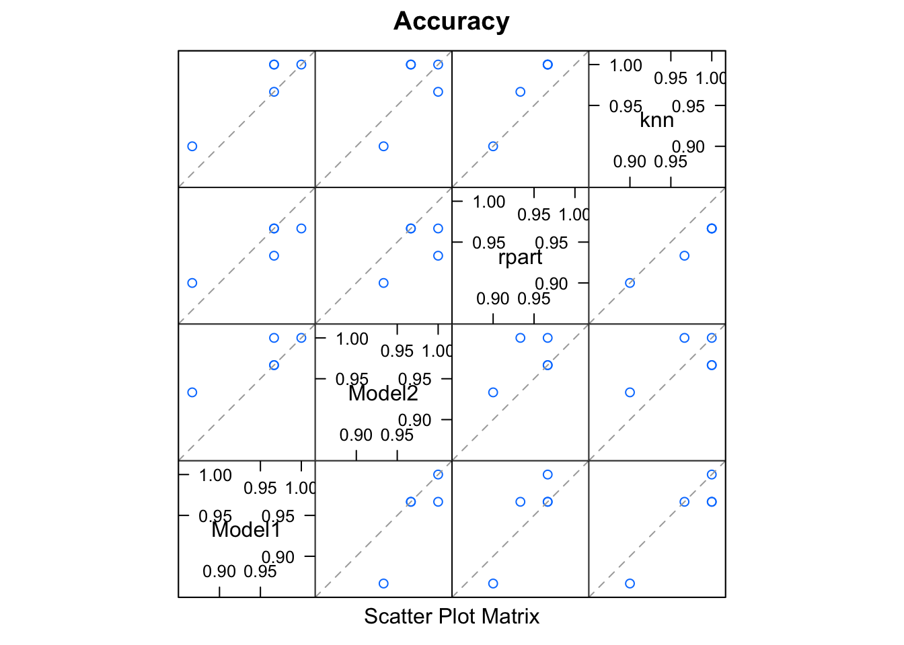

Ensembles
Tim Mastny
2018-03-07
This vignette demonstrates advanced features of leadr, applied to building an ensemble.
Ensembles
Ensembles come in two flavors1. The first idea is an averaging ensemble.

A set of models make predictions, and you average the predictions (or possibly the classification probabilities).
Empirically, a better technique is blended or stacked ensembles:

Here, data is split into k-folds. The model is trained on k-1 folds, then evaluated on each holdout. Combined, each holdout set recovers the original data set. Therefore, the holdout predictions form the new ensemble feature.
leadr has some basic tools that help build these type of blended models.
The Task
We will build an ensemble for the iris dataset, which is a multiclass classification dataset. Other packages such as caretEnsemble do not yet support multiclass ensembles. leadr fills this niche nicely.
First, let’s build a list of models.
library(purrr)
library(caret)
library(leadr)folds <- createFolds(iris$Species, k = 5, returnTrain = TRUE)
control <- trainControl(method = 'cv', index = folds, savePredictions = 'final')
mapped_list <- map(
c('rf', 'glmnet'),
~train(
Species ~ .,
data = iris,
method = .,
trControl = control
)
)We explicitly define the cross-validation index, because blending requires that each model is trained on the same set of folds.
We can also specify additional models using caretEnsemble.
library(caretEnsemble)
ensemble_list <- caretList(
Species ~ .,
data = iris,
trControl = control,
methodList = c('rpart', 'knn')
)models <- c(mapped_list, ensemble_list)
walk(models, board)
board()
#> # A tibble: 4 x 13
#> rank id dir model metric score public method num group index
#> <dbl> <id> <chr> <chr> <chr> <dbl> <dbl> <chr> <dbl> <dbl> <list>
#> 1 1. 2 models… glmnet Accur… 0.973 NA cv 10. 1. <list…
#> 2 1. 4 models… knn Accur… 0.973 NA cv 10. 1. <list…
#> 3 3. 1 models… rf Accur… 0.953 NA cv 10. 1. <list…
#> 4 4. 3 models… rpart Accur… 0.947 NA cv 10. 1. <list…
#> # ... with 2 more variables: tune <list>, seeds <list>Submodel Selection
We also want to evaluate the models that go into our ensemble. In general, we want to use two different criteria.
First, we want to maximize accuracy, as measured by the 5-fold cross-validation that we build our models on. Second, we want to minimize the prediction correlation. Suppose two sets of model predictions have similar accuracy scores, are not very correlated. This means that each model learned something different about the dataset, and would likely benefit from an ensemble.
caret offers some nice tools to see these criteria:
results <- resamples(models)
summary(results)
#>
#> Call:
#> summary.resamples(object = results)
#>
#> Models: Model1, Model2, rpart, knn
#> Number of resamples: 5
#>
#> Accuracy
#> Min. 1st Qu. Median Mean 3rd Qu. Max. NA's
#> Model1 0.8666667 0.9666667 0.9666667 0.9533333 0.9666667 1.0000000 0
#> Model2 0.9333333 0.9666667 0.9666667 0.9733333 1.0000000 1.0000000 0
#> rpart 0.9000000 0.9333333 0.9666667 0.9466667 0.9666667 0.9666667 0
#> knn 0.9000000 0.9666667 1.0000000 0.9733333 1.0000000 1.0000000 0
#>
#> Kappa
#> Min. 1st Qu. Median Mean 3rd Qu. Max. NA's
#> Model1 0.80 0.95 0.95 0.93 0.95 1.00 0
#> Model2 0.90 0.95 0.95 0.96 1.00 1.00 0
#> rpart 0.85 0.90 0.95 0.92 0.95 0.95 0
#> knn 0.85 0.95 1.00 0.96 1.00 1.00 0
modelCor(results)
#> Model1 Model2 rpart knn
#> Model1 1.0000000 0.8669214 0.8846517 0.9355852
#> Model2 0.8669214 1.0000000 0.5345225 0.6416889
#> rpart 0.8846517 0.5345225 1.0000000 0.9861169
#> knn 0.9355852 0.6416889 0.9861169 1.0000000
splom(results)
Some of our models are very correlated, which is to be expected for a simple data set.
The next step as described in the introductory diagram, is to create a new feature for each model from the out of fold predictions. leadr has a nice helper function for this:
blended <- oof_grab(models)
blended
#> # A tibble: 150 x 5
#> value value1 value2 value3 Species
#> <fct> <fct> <fct> <fct> <fct>
#> 1 setosa setosa setosa setosa setosa
#> 2 setosa setosa setosa setosa setosa
#> 3 setosa setosa setosa setosa setosa
#> 4 setosa setosa setosa setosa setosa
#> 5 setosa setosa setosa setosa setosa
#> 6 setosa setosa setosa setosa setosa
#> 7 setosa setosa setosa setosa setosa
#> 8 setosa setosa setosa setosa setosa
#> 9 setosa setosa setosa setosa setosa
#> 10 setosa setosa setosa setosa setosa
#> # ... with 140 more rowsNow we fit a final ensemble model on the blended data:
ensemble <- train(Species ~ ., data = blended, method = 'rf', trControl = control)
ensemble
#> Random Forest
#>
#> 150 samples
#> 4 predictor
#> 3 classes: 'setosa', 'versicolor', 'virginica'
#>
#> No pre-processing
#> Resampling: Cross-Validated (10 fold)
#> Summary of sample sizes: 120, 120, 120, 120, 120
#> Resampling results across tuning parameters:
#>
#> mtry Accuracy Kappa
#> 2 0.96 0.94
#> 5 0.96 0.94
#> 8 0.96 0.94
#>
#> Accuracy was used to select the optimal model using the largest value.
#> The final value used for the model was mtry = 2.Then we can add it to our leaderboard and see how it compares to the individual models. We’ll also take advantage of the dir argument of board. Saving this model to a new directory called ensembles allows a natural grouping of the baseline and ensemble models.
board(ensemble, dir = "ensembles")
#> # A tibble: 5 x 13
#> rank id dir model metric score public method num group index
#> <dbl> <id> <chr> <chr> <chr> <dbl> <dbl> <chr> <dbl> <dbl> <list>
#> 1 1. 2 models… glmnet Accur… 0.973 NA cv 10. 1. <list…
#> 2 1. 4 models… knn Accur… 0.973 NA cv 10. 1. <list…
#> 3 3. 5 ensemb… rf Accur… 0.960 NA cv 10. 1. <list…
#> 4 4. 1 models… rf Accur… 0.953 NA cv 10. 1. <list…
#> 5 5. 3 models… rpart Accur… 0.947 NA cv 10. 1. <list…
#> # ... with 2 more variables: tune <list>, seeds <list>